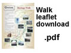
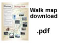
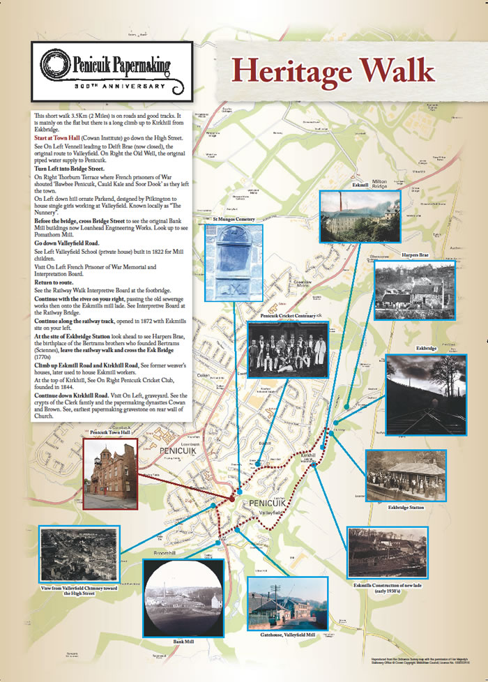

Heritage Walk
 |
  Heritage WalkWe have prepared a leaflet including a walk around Penicuik which includes many Papermaking linked features in the town. Please click on the Adobe .pdf file links to the right to view or print the leaflet and you can also print off the map for use when you follow the walk around the town. Or you can follow the walk route - click here |
 |


Penicuik Historical Society :: Penicuik Town Hall :: 33 High Street :: Penicuik :: EH26 8HS
e-mail :: info@penicuikpapermaking.org
e-mail :: info@penicuikpapermaking.org
© Penicuik Historical Society :: site by Wallace Web Design